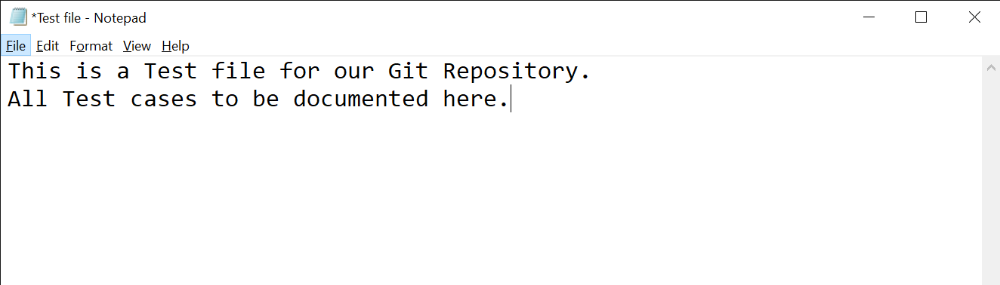

It‚Äôs almost that time of the year when Open Source enthusiasts, Developers, and Tech enthusiasts from different communities from all over the world participate in a month-long Open Source Fest. Yes I am talking about the Hacktoberfest ü§©

The Hacktoberfest is an amazing platform for everyone, whether you are a Developer, an Open Source Enthusiast, or if you are a Beginner who wants to begin his Open Source journeyü뮂Äçüíª.
Now if you are looking to contribute to Open Sourceüòç then you must have some working knowledge about Git/Github.
You might have heard about Git but if you haven’t it is a Version Control System that is used to manage/track your files in a Project that you are working on or if you are contributing to one.
So using Git and Github we can easily manage files, track changes to different files, manage workflows in a Project, and much more. That’s why they are such an important tool when working on Open Source Projects.
Setting up our Git Repository
Let‚Äôs make a Git Repository and learn about some useful Git commandsüòÄ.
Let’s start by creating a folder where we can have different files like a text file, an Excel Database file, a Markdown File, a Folder consisting of Source Code files(An actual Project may have many different files).
But right now for simplicity's sake let’s keep these files empty.

We can use Git Bash to write Git commands or we can also use VS Code which has built-in support for Git. You can install Git here or you can check out this link to know how to work with Git in Vs Code. If you are using Git for the first time do check this out to know how to set up Git Bash.
Now let’s open Git Bash by Right-clicking and selecting “Git Bash here”.
1. Initializing our Git Repository
Here we are initializing our Git Repository or you can say we are making our directory a Git Repository.
NOTE:-If you already have made a Git Repository then don’t use this command again else all the changes that you have made to this Repository will get re-initialized.
2. Staging Files Initially
We are staging these files initially so that now we can now track them using Git.
3. Creating Initial Commit
Let’s make our Initial Commit to our Repository.
Now let’s take a look at some of the useful Git commands for merging branches, forking a Repository, Renaming, and Deleting files using the command line, and much more.
Git Commands
1. git diff
We had already staged our files initially above and made our initial commit.
Now suppose I modify a file say “Test.txt” and save it.
Let’s run the “git status” command.
As you can see it shows that we have modified that file. Now let’s run the “git diff ” command and see what happens.
Here using the “git diff ” command we are actually comparing this file “Test.txt”(modified file) which is in our current working directory with the same file which we had staged earlier(i.e in the Staging Area).
So using this command we can come to know what modifications did we do in any file in our current Working Directory with the same file in Staging Area.

Here as you can see the ‘+’ symbol denotes the changes that we made in that file(in our Working Directory) and ‘-’ denotes the content in the file in the Staging Area
Note:- This command is not just limited to comparing two files, we can compare two branches as well.
2. git diff — staged
This command is used to know the difference between the files in the previous commit and the current Staging Area.
To understand this in detail let’s modify a few files.
Now let’s stage these files and run the “git diff — staged ” command.
As you can see it shows us the difference between these files in the previous commit and the changed version of these files in the staging area(currently staged but committed).
This can be helpful to review the previous commit and make necessary changes to any file.
3. Renaming and Deleting any file using Git Bash
Deleting/Renaming files can be a bit confusing and sometimes tedious especially if your Git Repository has a lot of files and folders because you would have to then stage all the files as wellüò•.
A cleaner and efficient way üòäto do this would be to use the following Git commands:-
Renaming a File
git mv <filename> <newfilename>
# <filename> is name of your file you want to rename.
# <newfilename> is name you want to give to your file.
Deleting a file
git rm <filename>
Using these commands we can easily Rename/Delete any file in our Repository and the changes would also be staged automatically by Git so you wouldn‚Äôt have to worry about staging these changesüòç.
4. Syncing Forks in Git and Github
The World of Open Source Development is really active because so many developers contribute to different Open Source Projects.
So if you are contributing to an Open Source Project then Syncing your forked Repository with the Original Repository becomes really important.
Suppose you already have a Forked Repository(on Github) which you want to sync with the Original Repository(from which you forked).
If you haven’t cloned the Forked Repo on your Local machine then just use the following command:-
git clone https://github.com/<Username>/<Repository-name>.git <filename>
# filename: It is the name of file/folder for the Cloned Repository on your Local Machine.
Now we will add the Original repository as a remote repository(upstream):-
git remote add upstream https://github.com/<Owner>/<Repository>.git
# add the original repository as remote repository called "upstream"
Now we will fetch the changes from the upstream repository:-
git fetch upstream
# Fetch the branches and their respective commits from the upstream repository.
We will now switch to the master branch of the fork’s local repo and merge the changes in the upstream repo to the local repo’s master branch:-
git checkout master
# switch to the master branch of your fork's local repo
git merge upstream/master
# Merge the changes from upstream/master into your local master branch.
This brings your fork‚Äôs local repo in sync with the Original repositoryüòÑ.
However, if you also want to update the forked repo on Github then you would have to push the master branch (or the branch in which you merged the changes of the upstream repo).
git push origin master
# origin: forked repository on Github
And boom!! Your Forked Repo on Github is also now synced with the Original RepoüòÑ.
That‚Äôs it from me guys, hope I was able to make it simple for everyoneüòÉ
Do share the post if you like itüëç
Happy Coding!!üòä Thank you for reading my blog!
Feel free to reach me out!
Linkedin
Twitter
← All Posts